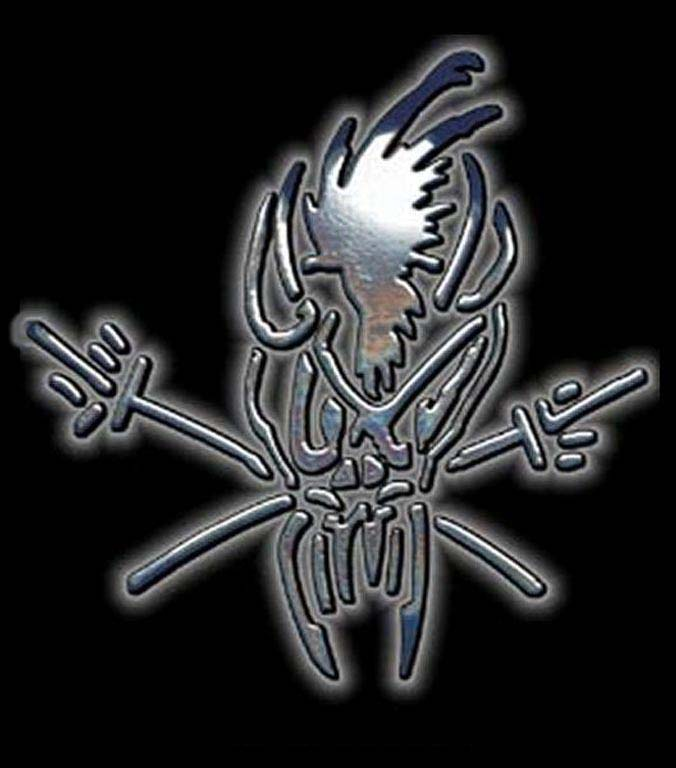
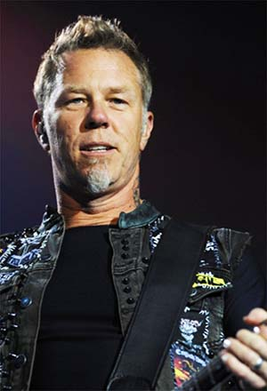
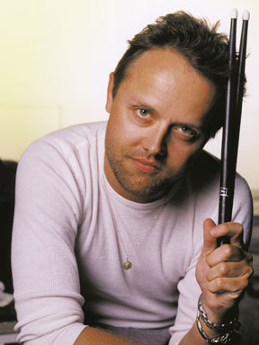
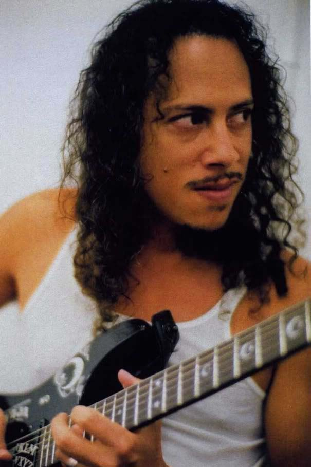
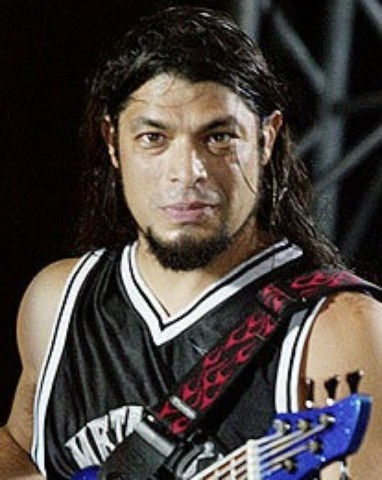

The Band

Metallica
Metallica is a heavy metal band from Los Angeles, California. The band's fast tempos, instrumentals, and aggressive musicianship placed them as one of the founding "big four" of thrash metal alongside Slayer, Megadeth, and Anthrax. Metallica was formed in 1981 when James Hetfield responded to an advertisement that drummer Lars Ulrich had posted in a local newspaper. The current line-up features founders Hetfield (vocals, rhythm guitar) and Ulrich (drums), longtime lead guitarist Kirk Hammett and bassist Robert Trujillo, who joined the band in 2003. Previous members of the band are lead guitarist Dave Mustaine, who went on to found Megadeth, bassists Ron McGovney (demos only), Cliff Burton (the first three records, died in 1986), and Jason Newsted. The band also had a long collaboration with producer Bob Rock, who produced all of its albums from 1990 to 2003 and served as a temporary bassist between the departure of Newsted and the hiring of Trujillo.

James Hetfield
When it comes to defining Metallica, most people use James Hetfield as their guide. There's never any bullshit with James and there's never any shirking of duties. Example? When he threw his back out on the Summer Sanitarium 2000 tour, James ploughed his way through three weeks of intense physical therapy in four days, according to his physical therapist. And when the going got really tough, and James needed help in 2001, he sought it out, took it on and came back stronger than ever. It is precisely this sort of fierce, unbending dedication, devotion and spirit which has made James such an inspirational focal point through the years for millions of fans.
Ironically, the voice of Metallica (indeed, a defining voice of his rock'n'roll generation) very nearly wasn't a voice at all, simply because in the early days, James Hetfield didn't fancy being a lead vocalist. Metallica tried a few different vocal/guitar configurations. Some of the options considered included adding another guitar player, having then-lead guitar player Dave Mustaine play the sole guitar and asking John Bush from Armored Saint to sing for the band. Of course common sense prevailed, James decided to fight harder to establish himself as a frontman and the results are, ahem, history

Lars Ulrich
The oft-seen and heard dynamo of Metallica, when it comes to arranging all matters from songs to staging, Lars is always at the epicenter. Indeed, constant activity has been a hallmark of Ulrich's life. As a child he saw his father Torben run a small jazz club in Copenhagen (sax player Dexter Gordon is Lars' Godfather) before following the family on the professional tennis circuit where Torben became an established figure.
Lars was nearly 10 when the sounds of Ritchie Blackmore and Deep Purple blew his little socks off at one of the first gigs he ever attended. It began a theme which has been recurrent in his life -obsession with a band- and having bought the 'Fireball' album, he began a Deep Purple love affair which continues to this day. At 13 his grandmother bought him his first drum kit, yet percussion vyed with tennis for priority. When the family moved to Newport Beach, CA in the late '70's, the seeds of priority scattered themselves in his field: girls, rock'n'roll and the occasional funny cigarette were all keys in turning Lars from the wooden raquet to full metal racket.

Kirk Hammett
Kirk Hammett, never without a grin or a curious thought, is the true Bay Area band-member. Born in San Francisco, and raised in the East Bay town of El Sobrante, he gained an interest in music from his brother Rick's extensive record collection, Jimi Hendrix, Led Zeppelin and UFO. It all led to him properly picking up the guitar when he was 15, his first being a wholly unglamorous Montgomery Ward catalog special accompanied by a shoe box with 4 inch speaker for an amp.
In April 1983, Kirk received a phone call from Metallica in New York. They were in the process of firing guitarist Dave Mustaine and wanted Kirk to fly out and audition. Kirk got the money together for the flight, left California for the first time and arrived in the late afternoon to find three guys who were still waking up. Immediately he, and they, knew the fit was right despite the fact nobody ever formally invited him to join.

Robert Trujillo
He's got rhythm, and he's most certainly got music. Now Robert Trujillo's also got the job of being Metallica's new bassist and family member...one that will doubtless fit this most righteous and cheerful of Southern Californians like a glove.
Although he sometimes does use a pick, Trujillo is best known as a baaaad motherplucker, a finger-playin' bass monster who's dexterity, tones and attitude have seen him grace the bass of Suicidal Tendencies, Infectious Grooves and Ozzy Osbourne's band since his first professional work with Suicidal in 1989. It all stems back to a childhood filled with variety and spice.